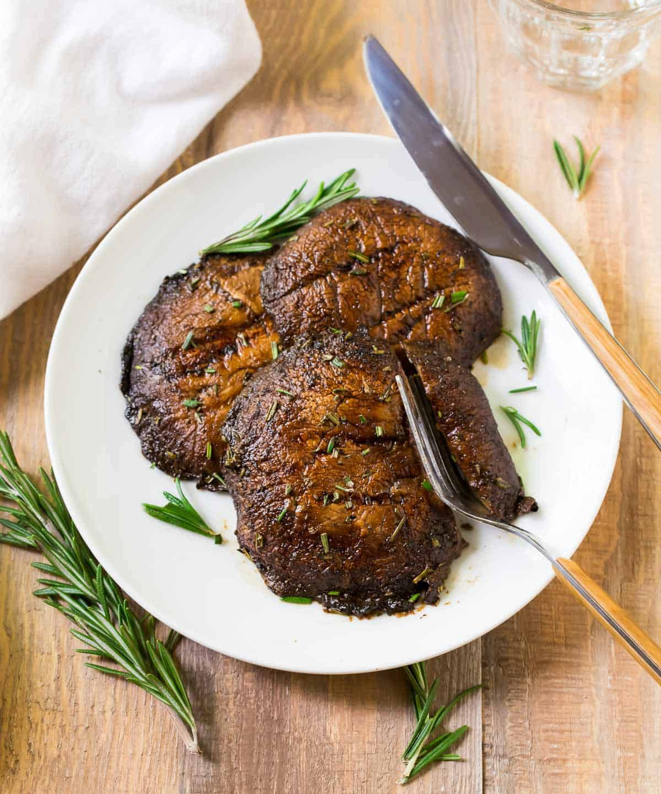

Grilled Portobello Mushrooms

This recipe is from Well Plated.
Description
Ingredients
- 4 large portobello mushrooms, stems and gills removed, wiped clean
- 1/4 cup balsamic vinegar
- 1 tbsp extra virgin olive oil
- 1 tbsp low sodium soy sauce
- 1 tbsp chopped fresh rosemary, or 1/2 teaspoon dried
- 1 tsp garlic powder
- 1 egg, beaten
- 1/2 teaspoon black pepper
- 1/8 teaspoon cayenne pepper optional, plus additional to taste
- Canola or vegetable oil, for grilling
Steps
- In a shallow baking dish, whisk together the balsamic vinegar, olive oil, soy sauce, rosemary, garlic powder, black pepper, and cayenne. Taste and adjust seasonings if you like. Add the mushrooms and turn to coat. Let sit for 5 minutes on one side, then flip and let sit 5 additional minutes. While the mushrooms marinate, prep the grill and anything you’d like to serve with them. You can let them sit for up to 30 minutes, so feel free to take your time—the longer they sit, the more intense the flavor will be.
- Heat a grill or a large skillet over medium heat (about 350 to 400 degrees F). Brush the grill with oil to prevent sticking. Remove the mushrooms from the bowl, shaking off any excess marinade and reserving the marinade for basting. Cook on each side for 3-4 minutes, or until caramelized and deep golden brown. Brush the remaining marinade over the mushrooms several times as they cook.
- To serve, top the portobello mushrooms with avocado sauce or any topping you like.